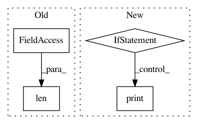

ff0291e54a32fe0fbe071487c82b26f6a60b71e1,autokeras/search.py,Searcher,add_model,#Searcher#Any#Any#Any#Any#Any#,89
Before Change
y_test,
False).train_model(**self.trainer_args)
accuracy += 0.005 * len(Graph(model, False).extract_descriptor().skip_connections)
accuracy = min(accuracy, 1)
model.save(os.path.join(self.path, str(self.model_count) + ".h5"))
plot_model(model, to_file=os.path.join(self.path, str(self.model_count) + ".png"), show_shapes=True)
After Change
x_test,
y_test,
False).train_model(**self.trainer_args)
if self.verbose:
print("Saving model.")
model.save(os.path.join(self.path, str(self.model_count) + ".h5"))
plot_model(model, to_file=os.path.join(self.path, str(self.model_count) + ".png"), show_shapes=True)
model_id = self.model_count
In pattern: SUPERPATTERN
Frequency: 3
Non-data size: 4
Instances
Project Name: keras-team/autokeras
Commit Name: ff0291e54a32fe0fbe071487c82b26f6a60b71e1
Time: 2018-05-17
Author: jin@tamu.edu
File Name: autokeras/search.py
Class Name: Searcher
Method Name: add_model
Project Name: tensorlayer/tensorlayer
Commit Name: f17c111d9b33c07a3a5d0fc00651d0ccfe33aa2a
Time: 2019-01-18
Author: jingqing.zhang15@imperial.ac.uk
File Name: tests/1_tutorial_mnist_mlp_eager_mode.py
Class Name:
Method Name:
Project Name: NifTK/NiftyNet
Commit Name: baecce5a6fbe4576ca8348a93dc56f07e7ba84f6
Time: 2019-06-05
Author: ucabtmv@ucl.ac.uk
File Name: niftynet/contrib/csv_reader/csv_reader.py
Class Name: CSVReader
Method Name: _parse_csv